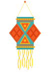
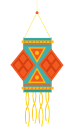
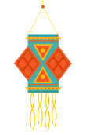

Developer handoff
The six festive pieces that are hardest to rebuild from a screenshot — buttons, diya, LED fairy lights, hanging marigolds, hanging lanterns and the sticky bottom bar — as stand-alone, copy-pasteable components. Everything on this page is live and is the same code the website runs, so it can’t drift out of date. Look, copy the markup, adjust the options.
assets/css/base.css (tokens + reset) → components.css → your page CSS. Optional: assets/js/components.js for the animated pieces.
Diya, lights and marigolds animate with GSAP 3 (ScrollTrigger only for light-up on scroll). No GSAP, or “reduce motion” on? Everything still renders, just still.
Plain HTML + CSS + one small script. In React/Vue/Shopify, reuse the CSS as is and call the NextroUI.* functions after mount (or lift the SVG strings out).
CSS only · used everywhere
The call-to-action family: six styles, three sizes, icon and round buttons, plus disabled and loading states.
<a class="btn btn--primary" href="#quote">Get a Quote <svg class="i"><use href="#i-arrow"/></svg></a>
<a class="btn btn--light btn--sm" href="#">Small light</a>
<button class="btn btn--primary" disabled>Disabled</button>
<button class="btn btn--light" disabled><span class="spinner"></span> Sending…</button>
<a class="icon-btn icon-btn--wa" href="#" aria-label="WhatsApp"><svg class="i i--fill"><use href="#i-whatsapp"/></svg></a>
<button class="round-btn" aria-label="Next"><svg class="i"><use href="#i-arrow"/></svg></button>| Name | What it does |
|---|---|
btn--primary | Saffron→orange gradient, inner highlight, soft orange shadow. A light shine sweeps across on hover. The main call to action. |
btn--light / --ghost / --dark / --glass / --wa / --text | Secondary styles. --glass is for dark backgrounds only. |
btn--sm / --lg | 40px and 56px tall. Default is 48px. |
[disabled] | 70% opacity, no pointer events. |
.spinner | Put inside a button while sending. 18px ring, 0.8s linear spin. |
icon-btn(--wa) / round-btn | Circular 42px (WhatsApp tint) and 48px (outlined, carousel arrows). |
.i / .i--fill | Icon helper: 1.25em, 2px round stroke, takes the text colour. --fill for solid icons. |
| What | Spec |
|---|---|
| Hover | Lifts 2px (0.3s, ease cubic-bezier(.2,.8,.2,1)); trailing arrow slides 3px right |
| Press | Scales to 98% |
| Primary shine | White diagonal band travels left→right in 0.8s on hover |
base.css (--ink, --night, --wa…). Change the token and every button follows.<a> for navigation and <button> for actions.SVG + optional GSAP motion
A clay lamp with a flickering flame, drawn as one inline SVG. Used in the deadline pill, the sticky bar, the success message and the closing row.
<span class="diya" data-diya></span> <!-- 56px -->
<span class="diya diya--inline" data-diya></span> <!-- 26px, sits in a line of text -->
<span class="diya" data-diya style="width:120px"></span> <!-- any width: the height follows (aspect-ratio 120:110) -->
<script src="assets/js/components.js"></script>
<script>
NextroUI.diya.render(); // draws the lamp into every [data-diya]
NextroUI.diya.animate(); // optional: flame flicker + glow pulse (needs GSAP)
</script>| Name | What it does |
|---|---|
data-diya | Marks an empty element; NextroUI.diya.render() fills it with the SVG lamp. |
width | Set any width on the element. Modifiers: diya--inline 26px · diya--dock 34px · diya--success 92px. |
NextroUI.diya.svg | The raw SVG string, if you would rather paste it into a template or a React component. |
NextroUI.diya.animate(root?) | Starts the flame and glow motion for every diya inside root (default: whole page). |
| What | Spec |
|---|---|
| Flame | Every 0.12–0.30s picks a random scaleY 0.86–1.14, scaleX 0.90–1.06 and rotation ±5°, from the base of the flame (sine in-out). It never repeats. |
| Glow | Halo opacity pulses to 0.6 and back over 0.9s (yoyo, infinite), each diya starting at a random offset. |
.diya__glow), flame (.diya__flame), clay bowl. Only the first two animate.NextroUI.defs() injects (#g-flame-glow, #g-flame, #g-diya).aria-hidden. Without GSAP or with “reduce motion” it stays still.JS-generated SVG + GSAP
A sagging wire with glowing, twinkling bulbs, generated to fit whatever box you give it. One hangs from the sticky header; another lights up on the closing section.
Header variant — wire + glowing bulbs, twinkling
Finale variant — white wire on a dark section
<!-- the parent must be position:relative (or fixed/sticky); the garland fills its width -->
<section style="position:relative">
<div class="lights lights--finale" data-lights="finale" aria-hidden="true"></div>
</section>
<script>
NextroUI.lights.mount(document.querySelector('[data-lights="finale"]'));
// switch on bulb-by-bulb when a section scrolls into view (needs ScrollTrigger):
// NextroUI.lights.lightUp(el, { trigger: '#finale', start: 'top 70%' });
</script>
<!-- pinned under a sticky header, handing over to the next section's garland -->
<header class="header">
<div class="lights lights--header"><div class="lights__push" data-lights="header"></div></div>
</header>
<script>
NextroUI.lights.mount(document.querySelector('[data-lights="header"]'));
NextroUI.lights.stickyHandoff(document.querySelector('.lights--header'), document.querySelector('#finale'));
</script>| Name | What it does |
|---|---|
data-lights | Hook only. Any empty box works; its size decides the drawing. |
lights--header | Hangs from the bottom of a sticky header (top:100%, 84px, clipped). |
lights--finale | White wire for dark backgrounds. |
mount(el, {twinkle}) | Draws the garland, starts twinkling (twinkle:false to skip), redraws when the viewport width changes by 40px+. |
lightUp(el, {trigger, start}) | Dims the bulbs, then lights them one by one when trigger reaches start. |
stickyHandoff(frame, nextEl) | Slides the pinned garland up under the header when nextEl arrives, so two strings are never visible. |
| What | Spec |
|---|---|
| Twinkle | Each bulb’s glow breathes between 25% and 60% opacity over 0.6–1.6s (yoyo, infinite), random start delay 0–1.5s |
| Light-up | Bulbs fade in 0.25s, 0.06s apart; glows fade in 0.4s; then twinkling starts |
| Hand-off | Linked to scroll position, no easing — it moves exactly with the page |
getPointAtLength, tilted −8°/0°/+8°.#g-bulb-a…d).JS-generated SVG + GSAP
Strands of marigold flowers that sway gently. Four hang from the top of the closing section.
<span class="marigold-strand" data-marigold="7"></span> <!-- 7 flowers -->
<script>
NextroUI.marigold.render(); // draws every [data-marigold] strand
NextroUI.marigold.animate(); // optional sway (needs GSAP)
</script>
/* place it however you like — the site hangs four of them from the top edge: */
.finale__marigolds .marigold-strand { position: absolute; top: 0; }| Name | What it does |
|---|---|
data-marigold="n" | Number of flowers (default 5). The strand grows 24px per flower. |
position | The component has no position of its own. Hang it with position:absolute; top:0 inside a relative box. |
| What | Spec |
|---|---|
| Sway | Rotates ±3° around the top of the strand (transform-origin 50% 0). Direction alternates per strand; duration 2.4s + 0.3s × strand index; yoyo, sine in-out, infinite. |
CSS only
Three sky lanterns on strings, swinging slowly in the air. Used in the How it works card.



Strings meet the top edge; each lantern swings from there
<!-- put it where the strings should meet the top edge -->
<div class="lanterns" aria-hidden="true" style="position:absolute; top:0; right:184px">
<img class="lantern lantern--left" src="assets/svg/figma/lantern-left.svg" alt="" width="100" height="146">
<img class="lantern lantern--mid" src="assets/svg/figma/lantern-mid.svg" alt="" width="127" height="222">
<img class="lantern lantern--right" src="assets/svg/figma/lantern-right.svg" alt="" width="110" height="172">
</div>
/* the three tuning knobs, per lantern */
.lantern--left { left: -18px; --px: 49.95px; --a: 3.2deg; --t: 5.6s; --d: -1.4s; }| Name | What it does |
|---|---|
--a | Swing angle each side of vertical (left 3.2°, mid 2.2°, right 2.8°). |
--t | Seconds for one swing one way (5.6s / 6.8s / 6.1s). A full back-and-forth is twice that. |
--d | Negative start delay so the lanterns are already out of step at page load. |
--px | Pivot, in px from the image’s left edge: where the string meets the top edge. |
.lanterns | A 261×216 box. Position it; the three images are placed inside it. |
| What | Spec |
|---|---|
| Swing | CSS keyframes lantern-swing: rotate(−a) ⇄ rotate(+a), alternate, infinite, easing cubic-bezier(.45,.05,.55,.95) (a sine-like ease) |
| Pivot | transform-origin = (--px, 0), the top of the string |
transform only, so it stays on the GPU.assets/svg/figma/lantern-*.svg), padded at the sides so the swing is never clipped.CSS + small JS
The floating bar that follows the visitor: it shows the order deadline, and turns into a live quote tray once they add products.
<div class="dock" data-dock aria-live="polite">
<div class="dock__inner">
<!-- state A: deadline (shown when the quote is empty) -->
<div class="dock__info dock__info--deadline">
<span class="diya diya--dock" data-diya></span>
<p><b>Diwali bulk orders close 1 Nov</b><span>28 days left</span></p>
</div>
<!-- state B: quote tray (shown once .has-items is on the dock) -->
<div class="dock__info dock__info--tray">
<span class="dock__count">20</span>
<p><b>2 products in your quote</b><span>Est. ₹57,000 + GST</span></p>
</div>
<div class="dock__actions">
<a class="icon-btn icon-btn--wa icon-btn--dock" href="https://wa.me/…" aria-label="Chat on WhatsApp">…</a>
<a class="btn btn--primary" href="#quote">Get a Quote …</a>
</div>
</div>
</div>
<script>
const dock = NextroUI.dock.mount(document.querySelector('[data-dock]'), {
after: '.hero', // appears once this has scrolled out of view
hideOn: ['#quote', '#finale', '.footer'], // slides away while any of these is on screen
});
dock.setHasItems(true); // swap the deadline copy for the quote tray
</script>| Name | What it does |
|---|---|
.is-visible | Slid into view. Without it the bar is parked below the screen edge and not clickable. |
.has-items | Shows the quote-tray content instead of the deadline content. It also forces the bar to appear even over the hero. |
mount(el, {after, hideOn, rootMargin}) | Wires the show/hide rules with an IntersectionObserver (rootMargin default 0 0 −15% 0). Returns {update, setHasItems(bool)}. |
.dock__count | Round marigold counter in the tray state. |
violet glow | The violet glow along the top is assets/svg/figma/pill-glow.svg, drawn as the bar’s background image on the night colour. |
| What | Spec |
|---|---|
| Slide | translateY 0.6s cubic-bezier(.2,.8,.2,1); it is 100% + 40px below the viewport when hidden |
| Counter | On site, the count pops 1.35→1 with a back-out ease when a product is added, and the estimate counts up over 0.6s (page logic in main.js, not part of the component) |
main.js does it from the quote tray.